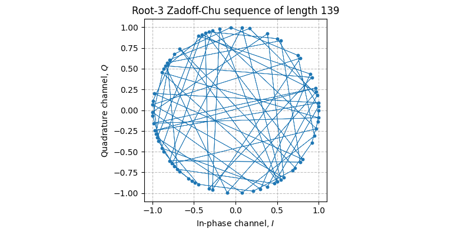
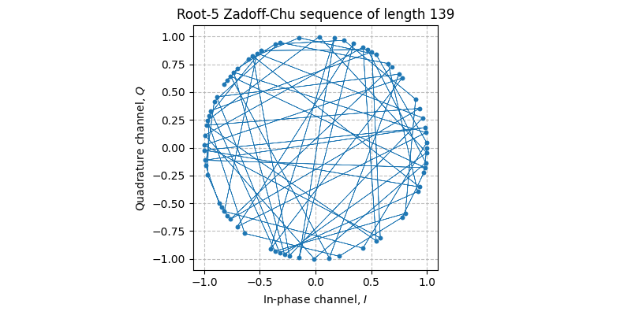
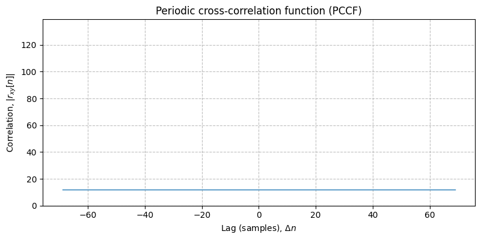

-
sdr.zadoff_chu(length: int, root: int, shift: int =
0) ndarray Returns the root-\(u\) Zadoff-Chu sequence of length \(N\).
- Parameters:¶
- length: int¶
The length \(N\) of the Zadoff-Chu sequence.
- root: int¶
The root \(0 < u < N\) of the Zadoff-Chu sequence. The root must be relatively prime to the length, i.e., \(\gcd(u, N) = 1\).
- shift: int =
0¶ The shift \(q \in \mathbb{Z}\) of the Zadoff-Chu sequence. When \(q \ne 0\), the returned sequence is a cyclic shift of the root-\(u\) Zadoff-Chu sequence.
- Returns:¶
The root-\(u\) Zadoff-Chu sequence of length \(N\).
Notes¶
The root-\(u\) Zadoff-Chu sequence with length \(N\) and shift \(q\) is defined as
\[x_u[n] = \exp \left( -j \frac{\pi u n (n + c_{f} + 2q)}{N} \right) ,\]where \(c_{f} = N \mod 2\).
References¶
Examples¶
Create a root-3 Zadoff-Chu sequence \(x_3[n]\) with length 139.
In [1]: N = 139; \ ...: x3 = sdr.zadoff_chu(N, 3) ...: In [2]: plt.figure(figsize=(8, 4)); \ ...: sdr.plot.constellation(x3, linestyle="-", linewidth=0.5); \ ...: plt.title(f"Root-3 Zadoff-Chu sequence of length {N}"); \ ...: plt.tight_layout(); ...:The periodic autocorrelation of a Zadoff-Chu sequence has sidelobes of magnitude 0.
# Perform periodic autocorrelation In [3]: corr = np.correlate(np.roll(np.tile(x3, 2), -N//2), x3, mode="valid"); \ ...: lag = np.arange(-N//2 + 1, N//2 + 2) ...: In [4]: plt.figure(figsize=(8, 4)); \ ...: plt.plot(lag, np.abs(corr) / N); \ ...: plt.ylim(0, 1); \ ...: plt.xlabel("Lag"); \ ...: plt.ylabel("Magnitude"); \ ...: plt.title(f"Periodic autocorrelation of root-3 Zadoff-Chu sequence of length {N}"); \ ...: plt.tight_layout(); ...:
Create a root-5 Zadoff-Chu sequence \(x_5[n]\) with length 139.
In [5]: x5 = sdr.zadoff_chu(N, 5) In [6]: plt.figure(figsize=(8, 4)); \ ...: sdr.plot.constellation(x5, linestyle="-", linewidth=0.5); \ ...: plt.title(f"Root-5 Zadoff-Chu sequence of length {N}"); \ ...: plt.tight_layout(); ...:The periodic cross correlation of two prime-length Zadoff-Chu sequences with different roots has sidelobes with magnitude \(1 / \sqrt{N}\).
# Perform periodic cross correlation In [7]: xcorr = np.correlate(np.roll(np.tile(x3, 2), -N//2), x5, mode="valid"); \ ...: lag = np.arange(-N//2 + 1, N//2 + 2) ...: In [8]: plt.figure(figsize=(8, 4)); \ ...: plt.plot(lag, np.abs(xcorr) / N); \ ...: plt.ylim(0, 1); \ ...: plt.xlabel("Lag"); \ ...: plt.ylabel("Magnitude"); \ ...: plt.title(f"Periodic cross correlation of root-3 and root-5 Zadoff-Chu sequences of length {N}"); \ ...: plt.tight_layout(); ...: